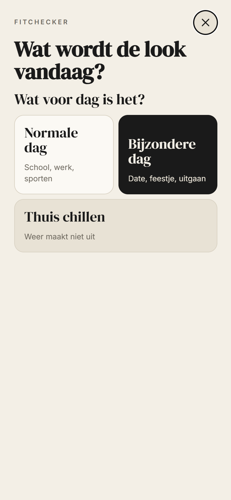
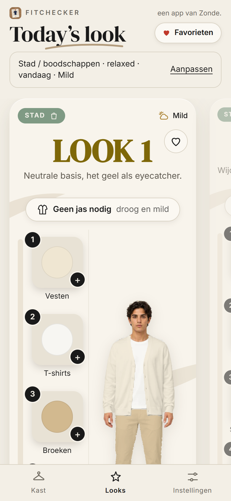
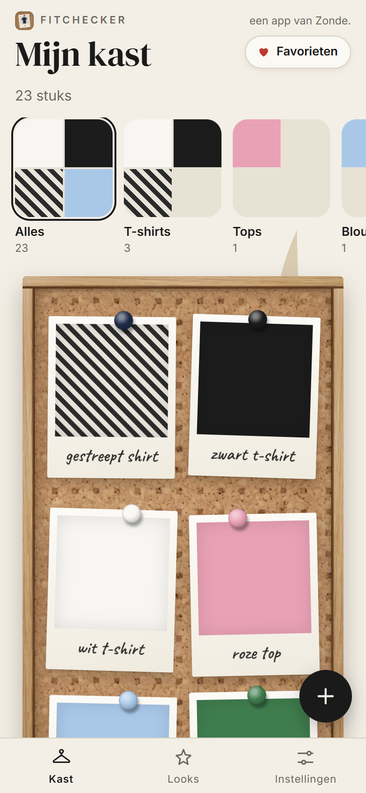

The goal
Wear what you have.
Almost every closet has clothes that never get worn. Not because they’re ugly, but because you forget about them or don’t know what to wear them with.
Fitchecker brings those pieces back. Tell it what kind of day you’re having, and the app makes outfits from your own clothes, matched to the weather and your plans. Whatever you haven’t worn in a while comes first. So you buy less, and still wear something different every day.
What it looks like



The screens show the sample closet. With your own photos it looks even better.
What it can do
- 1Photos of your clothesSnap your clothes. The app recognises the colours itself, even prints and stripes.
- 2Outfits for your day and the weatherThe real weather for that moment, and whether you’re cycling or taking the bus.
- 3Forgotten pieces firstWhat you haven’t worn in a while gets priority. The closet check shows what’s hiding in the back.
- 4Learns your styleWith a mood board and thumbs up or down, the app quickly learns what you like, and what’s on trend.
- 5Fitchecker WrappedA monthly recap: what did you wear most, and what got rescued from the back of your closet?
- 6Everything stays on your phoneNo account, no tracking. Your photos go nowhere.
Free
How do you want to get it?
No App Store needed. Add Fitchecker to your home screen in a minute, and it works just like an app.
Heads up: the app is in Dutch for now. An English version is on its way.